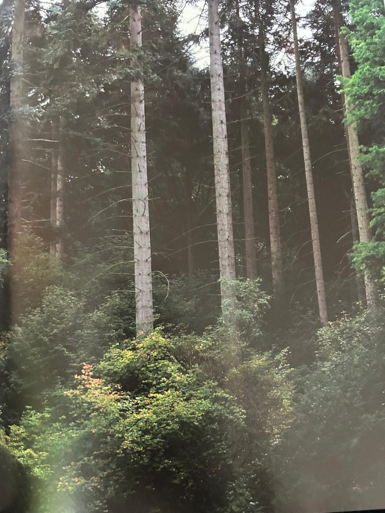

Groepen › Nieuwe Wereld
5. Oregon, Kustgebergte

Het kustgebergte van Oregon heeft nog steeds veel boomsoorten gemeen met de meer noordelijk gelegen streken : de Douglasspar, Sitkaspar, Westelijke hemlockspar, Reuzenlevensboom, Edelzilverspar, Pacifische zilverspar, Reuzenzilverspar. Naast Grootbladesdoorns vinden we hier ook twee generaties van de Oregones. In de bocht van de Koninklijke wandeling stoten we op de eerste Kustmammoetboom en op een buitenbeentje, de Californische torreya, een boom uit de knoptaxusfamilie met verwanten in Oost-Azïe. Het ligt in de ambitie van de arboretumbeheerders om het gamma te verrijken met meer bij de bostypes passende struiksoorten en hier staan er daarvan al enkele : Westamerikaanse kopkornoelje, Ocean spray of Holodiscus, Oemleria en Gaultheria. Aan de overkant van de Koninklijke Wandeling ligt een bostype met Lawsoncipres, een soort die van nature enkel in de streek van Port Orford voorkomt, maar bij ons veelvuldig is gebruikt als snelgroeiende groenblijvende haagplant.
Uit het boek
3,76 ha · 28 soorten · 1426 bomen · weerstation Florence
- Productiebos van het Kustgebergte van Oregon; "oregon" is in Europa vooral de houtnaam van de douglas.
- Langs de Koninklijke Wandeling staat in 5B een reuzenzilverspar van 1904 met 429 cm omtrek.
- De lawsoncipres verjongt zich hier vanzelf: een tweede generatie dateert al van 1944.
- 5D is het enige voorbeeld in het arboretum van het Abies amabilis-bostype.

Bron: Geografisch Arboretum Tervuren. Een wereldreis rond bomen (2020), p. 102 en volgende.
Deelgroepen
- 5A – Oregon - Coastal Range South
- 5B – Omgeving Port Orford
- 5C – Oregon - Coastal Range
- 5D – Kustgebergte van Oregon, middengebergte
Soorten in deze groep (28)
- Thuja plicataReuzenlevensboom · 295 bomen
- Tsuga heterophyllaWest-Amerikaanse hemlockspar · 290 bomen
- Chamaecyparis lawsonianaCalifornische schijncipres · 250 bomen
- Abies proceraEdelzilverspal · 144 bomen
- Abies grandisReuzenzilverspar · 107 bomen
- Pseudotsuga menziesiiGewone douglasspar · 89 bomen
- Abies amabilisCascadenzilverspar · 60 bomen
- Picea sitchensisSitkaspar · 45 bomen
- Fraxinus latifoliaOregon-es · 35 bomen
- Acer macrophyllumGrootbladesdoorn · 25 bomen
- Acer circinatumAmerikaanse rondbladesdoorn · 9 bomen
- Pinus contortaDraaiden · 8 bomen
- Pinus monticolaAmerikaanse witte den · 8 bomen
- Holodiscus discolorPluimspirea · 6 bomen
- Quercus garryanaOregon witte eik · 6 bomen
- Amelanchier alnifolia5 bomen
- Gaultheria shallonAppeltjesblad · 5 bomen
- Alnus rubraRode els · 4 bomen
- Oemleria cerasiformis3 bomen
- Quercus species2 bomen
- Alnus viridis subsp. sinuataSitka-els · 1 boom
- Celtis occidentalisAmerikaanse netelboom · 1 boom
- Cornus nuttalliiWest-Amerikaanse kopkornoelje · 1 boom
- Mahonia aquifoliumMahonia · 1 boom
- Populus trichocarpaWest-Amerikaanse balsempopulier · 1 boom
- Sequoia sempervirensSequoia · 1 boom
- Taxus species1 boom
- Torreya californicaCalifornische torreya · 1 boom
Tekst en foto: arboretum-tervuren.be (Koninklijke Schenking), met toestemming gebruikt.